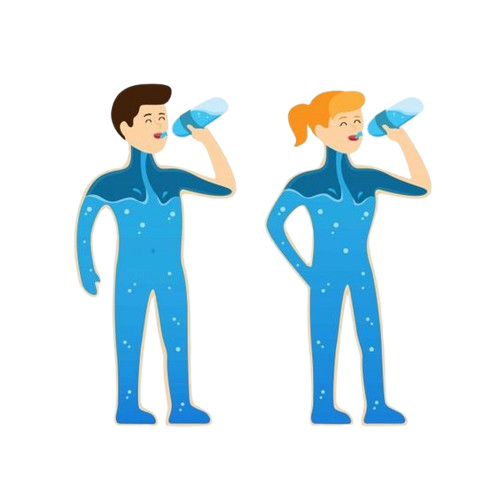

A Importância da Água no Organismo Humano

Água e o Corpo Humano
A água desempenha diversas funções essenciais no corpo humano, incluindo a regulação da temperatura corporal, transporte de nutrientes e oxigênio para as células, remoção de resíduos, e lubrificação de articulações. Ela compõe cerca de 60% do nosso corpo e é fundamental para o bom funcionamento dos órgãos e sistemas.
Funções da Água
-
Hidratação:
A água mantém o equilíbrio de fluidos no corpo.
-
Digestão:
Ela ajuda na digestão e absorção de nutrientes.
-
Eliminação de toxinas:
A água auxilia na remoção de resíduos pelo suor, urina e fezes.
-
Lubrificação:
As articulações, olhos e mucosas dependem de água para se manterem saudáveis.
-
Termorregulação:
A água é essencial para controlar a temperatura do corpo, principalmente por meio da transpiração.
Recomendações de Consumo
A quantidade recomendada de água varia de acordo com a idade, peso, e nível de atividade física, mas em geral, adultos devem beber em torno de 2 a 3 litros de água por dia para garantir o bom funcionamento do organismo.
Cálculo de Quantidade de Água
Digite seu peso (em kg) para saber quantos litros de água você deve beber por dia: